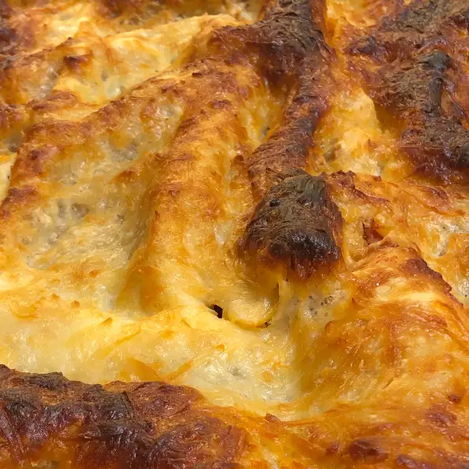

Lasagna

Description
A traditional lasagna, with about half the time and effort! I always cook extra to have leftovers, but the more I cook, the more they eat! Serve with garlic toast and salad.
Ingredients
- Ground Beef 1lb.
- Bulk Italian Sausage 1lb.
- Warm Water 1/2 Cup
- Sliced Black Olives 1 Cup
- Pinch of Basil
- Garlic Powder 2 tsp.
- Dried Oregano 1 tbsp.
- Dried Sage 1 1/2 tsp.
- Ground Black Pepper 2 tsp.
- Minced Garlic 2 tbsp.
- Dried Onion Flakes 1 tbsp.
- Marinara Sauce 2 (14 ounce) Jars
- Lasagna Noodles 1 (16) Ounce Package
- Ricotta Cheese 8 ounces
- Mozzarella Cheese, Shredded 1lb.
Directions
- Brown the ground beef and Italian sausage in a large skillet over medium-high heat. Drain excess grease. Stir in the water and black olives, and season with basil, garlic powder, oregano, sage, pepper, minced garlic, and onion flakes. Simmer for about 15 minutes, stirring frequently. Stir in the marinara sauce, and remove from the heat.
- Preheat the oven to 375 degrees F (190 degrees C).
- Place a layer of the meat and sauce in the bottom of a 9x13 inch baking dish. Cover with a layer of dry noodles. Spread a thin layer of ricotta cheese over the noodles, and sprinkle with a little mozzarella cheese. Cover with another layer of sauce, and repeat layering ending with the meat and sauce on top. Reserve about 1/2 cup of mozzarella cheese for later.
- Bake for 45 minutes in the preheated oven, but check after 30 minutes depending on how thick the lasagna is. Lasagna is cooked when you can easily stick a knife into it. Sprinkle the reserved cheese over the top, and return to the oven for about 10 minutes for a nice melted cheese topping.